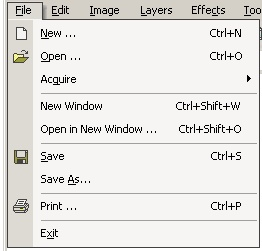

File Operations

The File Operations are the primarily way to acquire and save images in Paint.NET. These options operate very similar to other paint programs.
The following are the File Operations:
New
Open
Acquire
New Window
Open in New Window
Save / Save As
Print
Exit